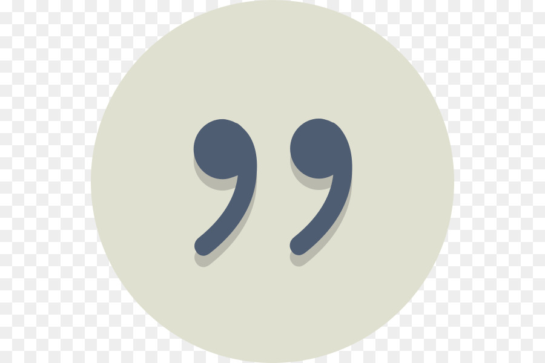

We are a nonprofit charity organisation based in Uganda.We reach out to as many people in need considering those closest to as, as in our commmunities and championing the act of Charity. we encourage people and institutions to kindly join us in this good cause.
we cordially invite you to join us to reach out to those in need.
Creating a new world, harnessing talents
and empowering the needy
with the
art of creativity and hope.
"To create the voice for the voiceless"
ie street children, poor single mothers
in remote rural areas, elderly men and women.
we look forward " To Serve and
Rescue the
Needy " people in communities
and Uganda at large.
There are many sick and elderly men and women in our communities most of which live on there own burden with illnesses that have claimed lives of those left unattened to due to lack of support.
There are many orphaned young children in our communities most of which live on there own burden with illnesses that have claimed lives of those left unattened to due to lack of support and lack of shelter.
There are many poor and disadvantaged people in our communities most of which live on there own burden with unreliable food and clean water supplies and living in poor housing structures and have no support financially and in urgent need of help.
Reaching out to the poor hungry needy in the villages, slums and on the streets. Gender Equality in job creation opportunities, harnessing and optimising talents. Encouraging and insipring the hope deprived youth to be able to grow through their challenges and adversity so as to be the best versions of themselves. Empowering the aging elderly men and women together with the homeless young children. Counselling and guidance among the hopless young youth, single mothers in deep villages, street kids and other need people. Promoting the general health and welfare in slums and embrace creativity among the youth thus leaving the new generation of legacy career achievers.
“Everyone, including those living in hard-to-reach communities, deserves relief and vital necessities like clean water immediately following an emergency. With Dream Act Foundation, we have been able to help those in need who may not otherwise receive aid in time.”
~ Umar B. Shaban
President & CEO, Dream Act Foundation